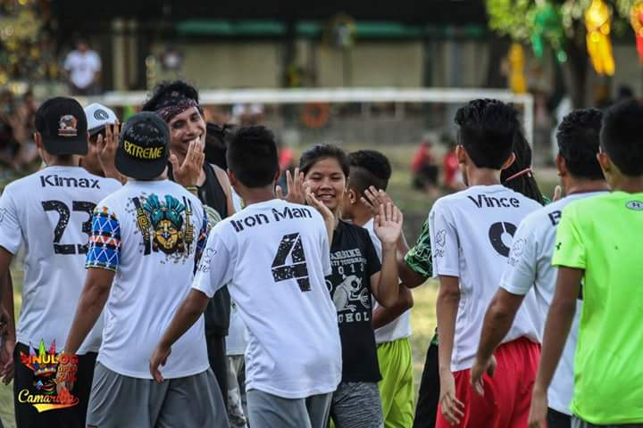

-was developed in 1968 by a group of students at Columbia High School in Maplewood, N.J. Although ultimate resembles many traditional sports in its athletic requirements, it is unlike most sports due to its focus on self-officiating, even at the highest levels of competition. This concept, called Spirit of the Game, is integrated into the basic philosophy of the sport, written into the rules, and practiced at all levels of the game from local leagues to the World Games.  Combining the non-stop movement and athletic endurance of soccer with the aerial passing skills of football, a game of ultimate is played by two teams with a flying disc on a field with end zones, similar to football. The object of the game is to score by catching a pass in the opponent’s end zone. A player must stop running while in possession of the disc, but may pivot and pass to any of the other receivers on the field. Ultimate is a transition game in which players move quickly from offense to defense on turnovers that occur with a dropped pass, an interception, a pass out of bounds, or when a player is caught holding the disc for more than ten seconds. Ultimate is governed by Spirit of the Game™, a tradition of sportsmanship that places the responsibility for fair play on the players rather than referees. Ultimate is played in more than 80 countries by an estimated 7 million of men and women, girls and boys. The international governing body, WFDF, represents 59 member associations in 56 countries. "What is ultimate?" as defined by the USA Ultimate Board of Directors? The USA Ultimate Board of Directors believes that one key factor that defines ultimate is that the players need to be the ones in control. The definition of ultimate developed by the board at the 2001 strategic planning meeting is as follows: "Player defined and controlled non-contact team sport played with a flying disc on a playing surface with end zones in which all actions are governed by the 'Spirit of the Game™."
There is a reason why the Sports & Fitness Industry Association (formerly the SGMA) continues to report ultimate as one of the fastest growing team sports in the country. Each year, thousands of new people begin playing this great sport. One reason so many people start playing is because it is FUN! Ultimate is genuinely fun and exciting. The unique flying options of the disc mean that no two throws look alike and the options are limitless.
From the beginner to the elite player, ultimate is a terrific sport that offers challenges at all levels of play. ultimate combines athletic skills of running, catching and throwing. Additional skills and athleticism beyond that are left up to the player's imagination. Many athletes of other sports find the transition to ultimate both easy and rewarding, as the sport requires many of the same techniques as basketball, soccer and even lacrosse. Whether you play-pick up occasionally at the local park or practice three times a week with your team, playing ultimate will leave you feeling energized and alive.

Ultimate is a legitimate sport with a national governing body. Ultimate is a real sport, with official rules, leagues, and competitions at all age levels. Ultimate is taught in schools, parks and recreation departments, boys and girls clubs, churches, colleges and through youth and adult leagues. Opportunities abound to play this terrific sport!
Ultimate is a great sport for school districts or anyone who is interested in trying something new and different with minimal costs. The equipment needed to play is incredibly few and relatively inexpensive. In addition to a low cost, ultimate combines athletic skills that children learn throughout their physical educations and can be easily applied to the sport of ultimate. Due to the low cost and the easy transition from other sports, ultimate is a perfect sport to introduce students.
Ultimate develops acceptance of responsibility for one's own behavior. Because players make their own calls, participation develops character, self-reliance, listening and negotiating skills and leadership qualities. Many schools and programs use this fun sport to also promote good sportsmanship and help participants develop conflict resolution skills.